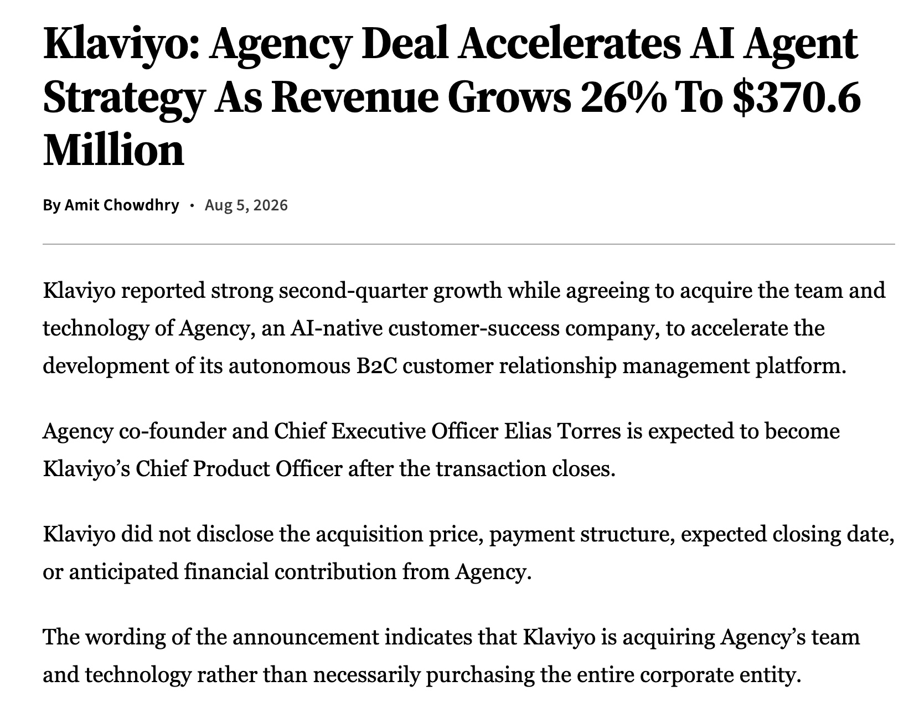

When you see this title, you may find it strange. Shouldn't a SaaS company be the vendor rather than the client?
The inspiration for this article came from a call I had with a marketing agency. In our industry, there is one company that can genuinely be described as the client: Klaviyo.
Some people may think I'm crazy for talking about one of my competitors. But from my perspective, every company or individual we compete with has something worth learning from — whether it is how they build their product or how they market themselves.
Klaviyo is still an industry pioneer to me, and a competitor I respect.
Start with the numbers
What does that actually mean? Many of us are still thinking about ARR in millions. Klaviyo, however, is already operating at a billion-dollar annual revenue scale.
Almost everyone recognizes Klaviyo
I am not only talking about clients. I am also talking about agencies.
Let me share what I have observed in mainland China. Among almost all the clients I have interacted with, excluding SMB accounts that have not yet started marketing, nearly 90% have either used Klaviyo or mentioned it to me. That percentage is remarkable.
Klaviyo is the benchmark in this industry, so it is impossible not to use it. — A client, on why they chose Klaviyo
I was genuinely surprised by Klaviyo's position in customers' minds. I also noticed that Klaviyo recently established its APAC headquarters in Singapore. This suggests that APAC may not yet be one of its strongest markets, which could mean the company has even more room to grow in the region.

You can also take a look at how many agency partners Klaviyo lists on its official website. Many of these agencies rely heavily on the Klaviyo ecosystem. They use the title "Klaviyo Elite Partner" as a core part of their positioning, because brands may choose an agency partly because of that qualification.
The managed-services and agency ecosystem is one of Klaviyo's strongest growth advantages. Reportedly, by early 2026, its agency and systems-integrator network, together with channel marketing, had influenced more than 40% of new business.
Does this mean other products are destined to lose?
Not necessarily.
We have successfully migrated several large clients. I cannot share my strategy publicly, but as I have said before, no product is perfect. Every client has different needs, and there is always a point of leverage if you look closely enough.
However, if you want to compete systematically, you still need a systematic marketing and channel strategy. More importantly, your product itself needs to withstand scrutiny. Otherwise, the client relationships you worked so hard to maintain will eventually break down.
Different stages require different growth strategies
Every product inevitably goes through several stages. I call them:
PMF → aggressive, spend-heavy marketing → self-sustaining growth at scale
The growth strategy is different at each stage.
If this gives you something to think about, I would love to hear your perspective in the comments.
More like this?
I write about GTM, GEO, AI agents, and the messy middle of scaling a B2B product. New post every 2–3 days.
Read more posts →看到这个标题你可能会觉得奇怪——SaaS不应该是乙方吗?
写这篇文章的灵感,来自我最近和一家营销机构的一通电话。在我们这个行业里,确实有一家公司够格被称为"甲方",那就是 Klaviyo。
有人可能会觉得我有点奇怪,为什么要写一篇关于自己竞品的文章。但站在我的角度,任何有竞争关系的公司或者人,身上都有值得学习的地方——无论是产品打法,还是营销方式。
Klaviyo对我来说始终是行业前辈,也是值得尊敬的对手。
数字优先
这是什么概念?我们大多数公司的ARR还是以M(百万)为单位在算,而Klaviyo一年的收入已经是以B(十亿)起步了。
几乎所有人都只认它
这里说的不只是品牌客户,还包括代运营机构(agency)。
我可以跟你们讲讲中国大陆市场的情况:我接触过的所有客户里,除了那些还没开始做营销的SMB账户,几乎90%的客户都用过或者提到过Klaviyo。这个比例相当夸张。
毕竟Klaviyo是这个行业的标杆,不可能不用它。 — 一位客户,谈为什么选择Klaviyo
我确实很惊讶Klaviyo在客户心中的地位有这么高。我留意到Klaviyo刚在新加坡建立了亚太总部,这说明APAC目前还不是他们的主力市场,未来可能会加大投入力度。
另外你可以去看看他们官网挂出来的合作代运营机构数量,这些agency几乎是靠Klaviyo吃饭的。他们把"Klaviyo Elite Partner"作为宣传自己的核心卖点,因为品牌客户会因为这个头衔选择这家agency。
代运营/Agency生态是Klaviyo一个非常强的增长优势——据说到2026年初,代理商和系统集成商网络这条渠道,已经影响了超过40%的新签业务。
这是否意味着其他产品一定会输?
不一定。
我们确实成功地从Klaviyo手里搬迁过一些大客户。具体策略我不方便公开讲,但正如我之前说过的,没有一个产品是完美的,因为每个客户的需求都不一样,你总能找到值得撬动他们的点。
但如果你想要系统性地正面竞争,还是需要建立成体系的营销策略和渠道,更重要的是,你的产品本身也要经得起推敲——不然费尽心思维系的客户关系,最终还是会破裂。
不同阶段,不同的增长策略
对于一个产品来说,必然会经历几个阶段,我把它们称为:
PMF —— 烧钱营销 —— 规模自增长
不同阶段,产品的增长方式是不一样的。
如果你看到这里也有自己的想法,欢迎留言聊聊你的看法。